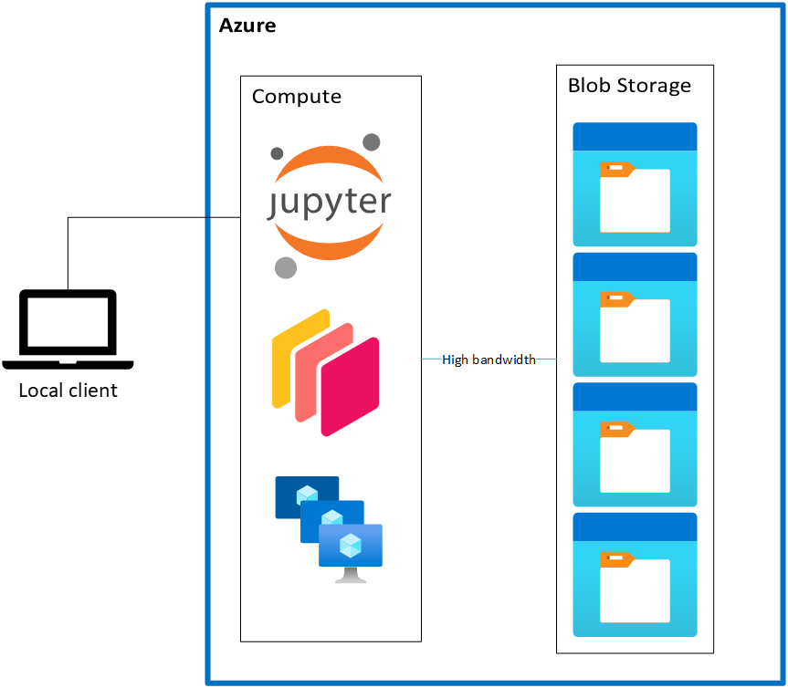

Problems with data access#
This notebook performs a similar operation as the last notebook: loading some NWM data from Azure Blob Storage. But instead of visualizing the data, we’ll focus into some potential performance issues with accessing the data as-is. We’ll compare two ways of getting the data:
A “download” workflow, where you download the files ahead of time to your local disk
A “cloud-native” workflow, where you read the data directly from Blob Storage.
In the subsequent notebooks, we’ll explore different ways of accessing and storing the data that optimize things for the cloud.
Background#
First, some background on different “styles” of working that the Pangeo community have identified.
Under the “download” style of working, there are two distinct phases. An initial download phase, where data are downloaded from the HTTP / FTP / whatever server to your local workspace (laptop, workstation, HPC, etc.). Once the files are downloaded, you start your iterative clean / transform / analyze / visualize cycle. This model works alright for smaller, static datasets. It breaks down for datasets that are updating frequently, or are so large that downloading the archive isn’t an option.

Under the “cloud-native” model, there isn’t an initial download phase; the data stay where they are in Azure Blob Storage. Instead, you read the data directly into memory on your compute. Crucially, the compute is deployed in the same Azure region as the data, which gives you a nice, high-bandwidth connection between the storage and compute services.
Unsurprisingly, we’re big fans of the cloud-native model. While there are some nuances, overall it’s a lower barrier to entry for newcomers. And can scale extremely well to large datasets (depending on the format and access pattern, as we’ll dig into now).
import adlfs
import azure.storage.blob
import planetary_computer
import xarray as xr
import urllib.request
fs = adlfs.AzureBlobFileSystem(
"noaanwm", credential=planetary_computer.sas.get_token("noaanwm", "nwm").token
)
# force xarray to import everything
xr.tutorial.open_dataset("air_temperature");
Download Workflow#
First, we’ll use the classic “download model” workflow style, where we download the data to disk ahead of time.
print("Downloading from Blob Storage")
%time filename, response = urllib.request.urlretrieve("https://noaanwm.blob.core.windows.net/nwm/nwm.20230123/short_range/nwm.t00z.short_range.land.f001.conus.nc")
print("-" * 80)
print("Reading metadata")
%time ds = xr.open_dataset(filename)
print("-" * 80)
print("Loading data")
%time ds = ds["SOILSAT_TOP"].load()
Downloading from Blob Storage
CPU times: user 68.1 ms, sys: 90.8 ms, total: 159 ms
Wall time: 369 ms
--------------------------------------------------------------------------------
Reading metadata
CPU times: user 20.4 ms, sys: 0 ns, total: 20.4 ms
Wall time: 20.4 ms
--------------------------------------------------------------------------------
Loading data
CPU times: user 343 ms, sys: 124 ms, total: 467 ms
Wall time: 467 ms
Timing will vary a bit, but we’re seeing roughly 500 ms to download the data, 20 ms to read the metadata, and 500 ms to load the data from disk.
Cloud-native model#
The open_dataset in the last notebook, where we streamed bytes directly from blob storage, might have felt a bit slow. Let’s do some timings and logging to see what’s going on.
import logging
import pathlib
import azure.core.pipeline.policies
p = pathlib.Path("log.txt")
p.unlink(missing_ok=True)
# Ensure range requests are logged
azure.core.pipeline.policies.HttpLoggingPolicy.DEFAULT_HEADERS_ALLOWLIST.add(
"Content-Range"
)
logger = logging.getLogger()
logging.basicConfig(level=logging.DEBUG, filename="log.txt")
%%time
prefix = "nwm/nwm.20230123"
ds = xr.open_dataset(
fs.open(f"{prefix}/short_range/nwm.t00z.short_range.land.f001.conus.nc")
)
display(ds)
<xarray.Dataset>
Dimensions: (time: 1, reference_time: 1, x: 4608, y: 3840)
Coordinates:
* time (time) datetime64[ns] 2023-01-23T01:00:00
* reference_time (reference_time) datetime64[ns] 2023-01-23
* x (x) float64 -2.303e+06 -2.302e+06 ... 2.303e+06 2.304e+06
* y (y) float64 -1.92e+06 -1.919e+06 ... 1.918e+06 1.919e+06
Data variables:
crs |S1 ...
SNOWH (time, y, x) float64 ...
SNEQV (time, y, x) float64 ...
FSNO (time, y, x) float64 ...
ACCET (time, y, x) float64 ...
SOILSAT_TOP (time, y, x) float64 ...
SNOWT_AVG (time, y, x) float64 ...
Attributes:
TITLE: OUTPUT FROM NWM v2.2
model_initialization_time: 2023-01-23_00:00:00
model_output_valid_time: 2023-01-23_01:00:00
model_total_valid_times: 18
Conventions: CF-1.6
code_version: v5.2.0-beta2
NWM_version_number: v2.2
model_output_type: land
model_configuration: short_range
proj4: +proj=lcc +units=m +a=6370000.0 +b=6370000.0 ...
GDAL_DataType: GenericCPU times: user 241 ms, sys: 56.3 ms, total: 298 ms
Wall time: 989 ms
So about 1 – 1.5 seconds just to read the metadata. Let’s load up some data too.
logger.info(f"{' Reading Data ':=^80}")
%time soil_saturation = ds["SOILSAT_TOP"].load()
CPU times: user 454 ms, sys: 150 ms, total: 604 ms
Wall time: 867 ms
And another 1 – 1.5 seconds to read the data. The logs will help us figure out what’s going on.
Inspecting the logs#
We wrote a bunch of output to log.txt, which we’ll go through now. For some context, the overall workflow here is xarary uses h5netcdf to load the NetCDF file. h5netcdf will “open” the “file” we give it, and do a bunch of seeks and reads to read the HDF5 file format. But, crucially, we don’t have a regular file here. Instead, we have this fsspec.OpenFile thing. When h5netcdf reads the first eight bytes, fsspec will go off and make an HTTP request to download that data from Blob Storage.
So to understand the performance, we’ll want to look for file reads and HTTP requests.
Look at the number of “reads” by xarray / h5netcdf (~ 130!)
Count the number of HTTP requests (~ 13!)
To summarize the timings
Stage |
Download |
Stream |
|---|---|---|
Download |
0.5 |
- |
Metadata |
0.02 |
1.5 |
Data |
0.5 |
1.5 |
Total |
1.02 |
3.0 |
Not looking so good for the “cloud-native” way, huh? Just wait!
Lessons#
In the cloud-native approach, we only download data on demand. This works great for cloud-friendly file formats like Cloud Optimized GeoTIFF and Zarr.
With fsspec reading non-cloud-optimzied file (HDF5 files), we can emulate the cloud-native workflow where we download data on demand. It’s extremely convenient, but has very different performance characteristics compared to a local file system. In general, the cloud native approach works best when
Metadata is in a consolidated location
You’re accessing a subset of a file
If you’re downloading all the bytes (because it’s a small file or you need all the bytes), it doesn’t really matter how they’re organized
Think reading a small spatial window out of a large raster image. This is possible with COG (or chunks of a Zarr dataset)
You’re accessing the data in parallel
With a storage service like Azure Blob Storage many machines can access the data simultaneously
In the next couple notebooks we’ll look at some better ways to access these data on the cloud. We’ll see
Kerchunk: Optimizes metadata reads from the existing files. A better cloud-optimzied layer on top of non-cloud-optimized files
Convert the data to a cloud-friendly format (Zarr, geoparquet)
Now let’s shut down this notebook kernel and move on to Using Kerchunk.